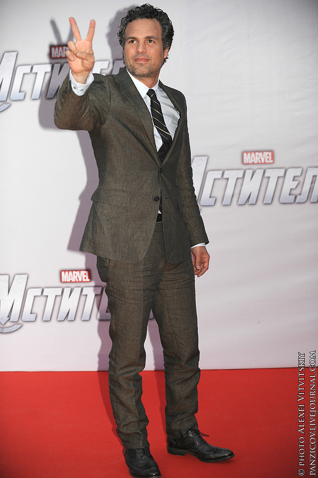

Марк А́лан Ру́ффало (англ. Mark Alan Ruffalo, английское произношение: [ˈrʌfəloʊ]; род. 22 ноября 1967) — американский актёр, продюсер и активист. Двукратный лауреат премии «Эмми», лауреат премии «Золотой глобус», а также номинант на премии «Оскар», BAFTA, «Грэмми» и «Тони». Наибольшую известность Руффало принесли роли в фильмах «Можешь рассчитывать на меня» (2000), «Из 13 в 30» (2004), «Между небом и землёй» (2005), «Зодиак» (2007), «Детки в порядке» (2010), «Остров проклятых» (2010) «Охотник на лис» (2014), «Обычное сердце» (2014), «Бесконечно белый медведь» (2014), «В центре внимания» (2015) и «Тёмные воды» (2019), а также роль Брюса Бэннера / Халка в супергеройских фильмах «Мстители» (2012), «Мстители: Эра Альтрона» (2015), «Тор: Рагнарёк» (2017), «Мстители: Война бесконечности» (2018) и «Мстители: Финал» (2019).
